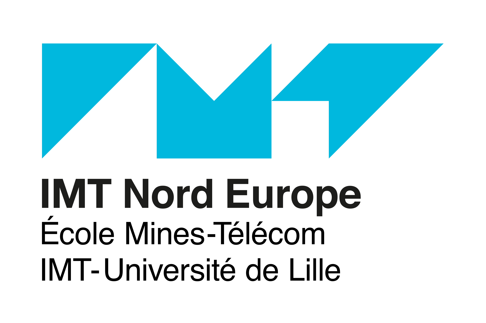
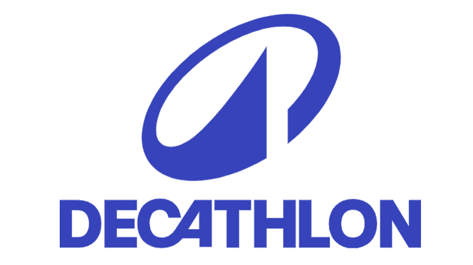
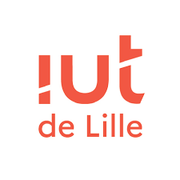
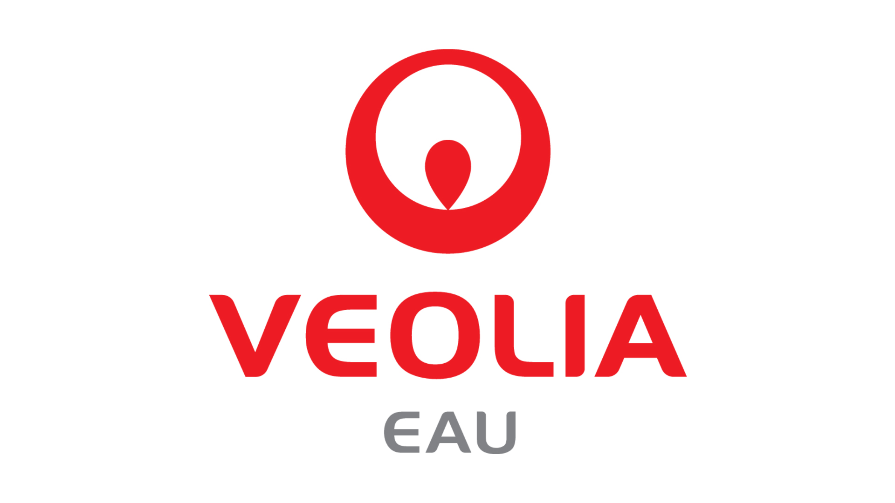

Ravie de vous rencontrer !
Actuellement étudiante en deuxième année de cycle ingénieur à l'IMT Nord Europe, je suis également apprentie ingénieure Cloud/Ops chez Decathlon.
Egalement attirée par les domaines de la communication digitale, du design et des relations internationales, je suis à la recherche d'un stage sur ce thème d'une durée de 2 à 3 mois, entre mi-Juin et fin Septembre.
Mes Formations & Jobs

Diplôme d'Ingénieur en Informatique
IMT Nord Europe, 2024-2027
Ingénieure Cloud/Ops
Decathlon France, 2024-2027
BUT Informatique
IUT de Lille, 2021-2024
Ingénieure Informatique Industrielle
Veolia France, 2022-2024Mes Projets (professionnels/scolaires)
Mes Compétences
Voici une liste des principales technologies que j'ai pu apprendre à maîtriser à l'issue de mon parcours professionnel et scolaire, mais également sur le plan personnel.